CSS float
CSS свойство float используется для указания, как должен "плавать" элемент внутри своего родительского контейнера. Когда элемент устанавливается в "плавающий" режим, он автоматически перемещается влево или вправо, и оставляя пустое место справа или слева от него, соответственно. Это позволяет другим элементам обтекать его и располагаться рядом с ним.
Иногда при вёрстке блока нужно, чтобы текст рядом с картинкой занимал всё оставшееся место, а после картинки располагался на всю ширину блока. Для таких ситуаций и создан float. Элемент, для которого указано это свойство, частично выходит из потока: все элементы блочного контекста, прописанные в коде после элемента с float, занимают его место, а элементы строчного контекста — «обтекают» его.
Без использования float
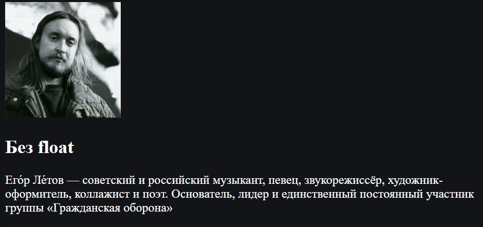Используя float :
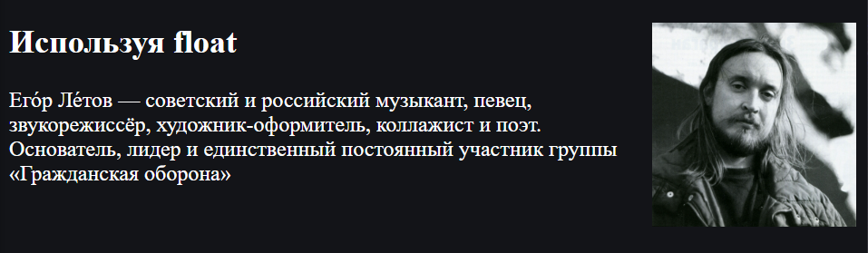Для установки свойства float нужно добавить его к CSS правилу и установить значение left или right соответственно.
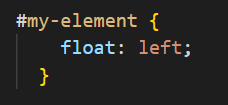Как работает float
При применении этого свойства происходит следующее:
- Элемент позиционируется как обычно, а затем вынимается из документа потока и сдвигается влево (для left) или вправо (для right) до того как коснётся либо границы родителя, либо другого элемента с float.
- Если пространства по горизонтали не хватает для того, чтобы вместить элемент, то он сдвигается вниз до тех пор, пока не начнёт помещаться.
- Другие непозиционированные блочные элементы без float ведут себя так, как будто элемента с float нет, так как он убран из потока.
- Строки (inline-элементы), напротив, «знают» о float и обтекают элемент по сторонам.
Очистка потока
Рассмотрим пример. Наша цель получить вот такое расположение элементов:
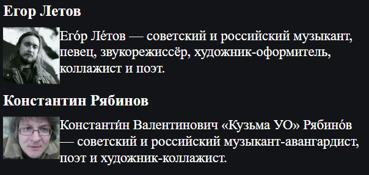Но просто использововав такой код:
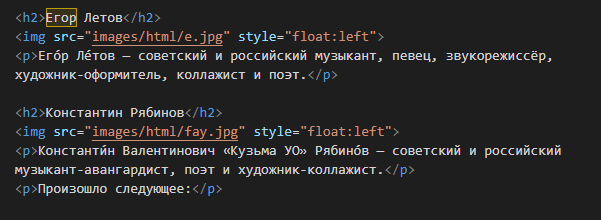Мы получаем нечто другое:
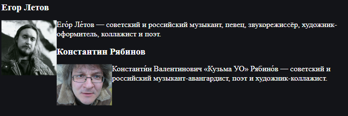Произошло следующее:
- Заголовок не заметил float (он же блочный элемент) и расположился сразу после предыдущего параграфа.
- После него идёт float-элемент – картинка. Он был сдвинут влево. Согласно алгоритму, он двигается до левой границы или до касания с другим float-элементом, что и произошло.
- Так как у картинки float:left, то последующий текст обтекает её справа.
Как исправить?
Мы будем использовать div со свойством clear.
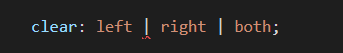Применение этого свойства сдвигает элемент вниз до тех пор, пока не закончатся float'ы слева/справа/с обеих сторон.
Просто добавим div со свойством clear: both после первого параграфа:
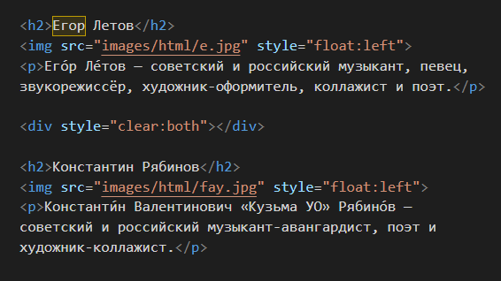И все встанет на свои места.
Еще одна проблема float
Из-за того, что блок с float удалён из потока, родитель не выделяет под него места.
К примеру:
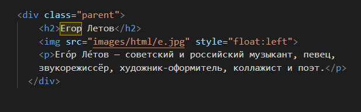 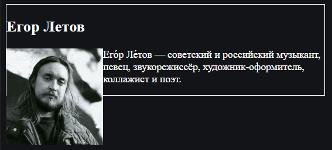Чтобы это исправить есть несколько способов
Поставить родителю float
Элемент с float обязан расшириться, чтобы вместить вложенные float.
Поэтому, если это допустимо, то установка float контейнеру всё исправит:
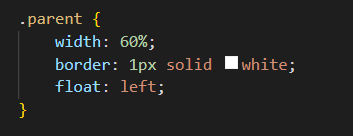 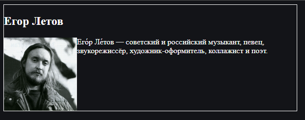Добавить в родителя элемент с clear
Добавим элемент div style="clear:both" в самый конец контейнера .parent.
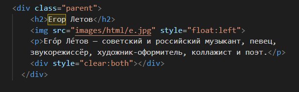 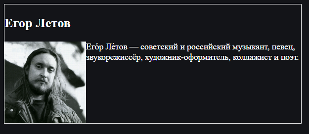Проблема решена!
Свойство float может вызвать некоторые проблемы с макетом и производительностью, поэтому его следует использовать с осторожностью. Например, элементы, которые "плавают", могут вызвать проблемы с высотой родительского контейнера, а также могут вызвать проблемы с доступностью и производительностью в некоторых случаях. В некоторых случаях может быть предпочтительнее использовать свойства display и flexbox для достижения того же эффекта.